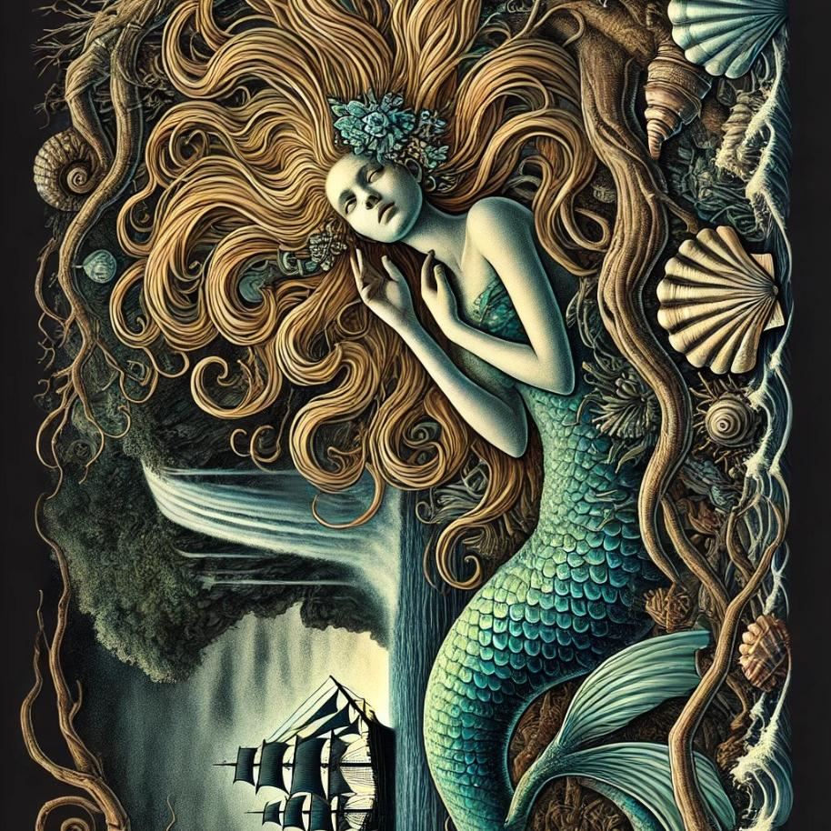

La Pincoya es un ser mitológico de la isla de Chiloé, descrita como una mujer de extraordinaria belleza, con cabello dorado y vestimenta hecha de algas marinas. Ella es el espíritu del mar y la fertilidad marina. Según la leyenda, la Pincoya aparece en la costa y realiza una danza misteriosa. Si baila mirando hacia el océano, será señal de que habrá abundancia de pesca en la región. Sin embargo, si danza mirando hacia la tierra, los pescadores enfrentarán épocas de escasez. Se dice que, para invocar su favor, los chilotes cuidan el mar y sus tradiciones. La Pincoya simboliza la conexión entre la naturaleza y los habitantes de Chiloé.